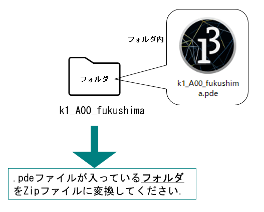
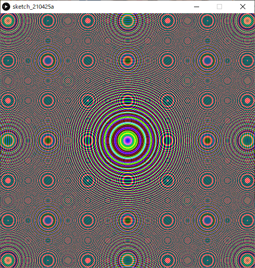

課題2 繰り返し文によるパターン作成
繰り返し（for文）を効果的に使用した美しいパターン画像をデザインしなさい．
目的
- 繰り返し文の記述方法に慣れること．
- 効率的に美しい画像を生成する方法を体験すること．
条件
画面サイズは500×500ピクセルとする．
必ずfor文を使用すること．
図形描画命令（point, line, rect, ellipse等）は全てfor文のブロック文
{ }の中に記述してあること． 以下のように，for文にネストされているif文のブロック文内でもOK．xxxxxxxxxxfor(int iX=0; iX<500; iX++){if( iX%2 == 0 ){point( iX, 50 );}}画像は複雑であるほど評価が高いが，プログラムはできるだけ効率的に設計するよう心がけること．
プログラム中にコメントを適切に入れること．
日本語表示が上手くいかない場合は簡単な英単語やローマ字などでもよい．
日本語コメントを入れたい場合，Processing バージョン3.54以前のものをダウンロードして使うとよい．
- インストール不要．
- 最新のバージョン4.0は現在日本語表示にバグがあり．
第４回目の授業「制御文」までで学習していない文法や命令を用いることは極力控える．
- 静止画作品であるので，setup( )や，draw( )を使ったアニメーションの使用は不可．
提出用パワーポイントが自分のPC環境で編集できない場合，できるだけスタジオのWindowsPCを使って編集し，提出すること．
- スタジオのWindowsPCなら確実に編集できるはず．
- どうしてもスタジオのPCで編集が行えない場合のみ，事前に講師にメールで通知の上，通常のテキストボックスにコードをペーストして提出すること．
提出までの流れ
提出期限：5/23(月) 23:59
Teams課題ページより以下のリソースをダウンロードする．
- k2_A00_fukushima.pptx
k2_A00_fukushima.pptx のファイル名を以下のように変更する．
- k2_クラス+クラス番号_苗字
- 例：k2_A02_akama, k2_B16_shibata, k2_C22_saitou
Processingを使用して作品を制作する．
- 早めにスケッチブック（フォルダ）とスケッチ(.pde)の名前をステップ2.のpptxファイルと同じ名前にしておく．
画像が完成したら，Processing の実行ウィンドウ（画像が表示されているウィンドウ）のスクリーンショットを撮影． Windows標準のペイントソフトなどにペーストし，そのままpngファイルとして保存する．
最前面のウィンドウのスクリーンショットの撮り方
Windows
「[Alt] + [PrtSc(PrintScreen)]」
Mac
「[shift]キー＋[command]キー＋[4]キー→[Space]キー」
スケッチブック(pdeが入ったフォルダ)をzip形式に圧縮する.
- 圧縮の前に，スケッチブック（フォルダ）とスケッチ(.pde)の名前が「k2_クラス+クラス番号_苗字」になっているか確認．
- k2_クラス+クラス番号_苗字.zip が出来上がるはず．
pptxファイルをパワーポイントで開き
- 右に表示されているサンプル画像を自分の作品のスクリーンショット(png)に差し替える．
- 左のテキストボックス内のプログラムを自分の作品のプログラムに差し替える．
- 保存する．

ファイルの提出
Teams課題2のページで「+作業の追加」をクリックして，出来上がった以下の２つのファイルをアップロードしてください．
- k2_クラス+クラス番号_苗字.pptx
- k2_クラス+クラス番号_苗字.zip
評価
提出を正しく行えているか．
- 提出期限を順守する．
- 提出したファイルがそろっている．
- ファイル名が指定した形式通り正しく付けられている．
プログラムの読みやすさ．
- 適切にコメントが付けられているか．
- for文やif文のカッコ類が適切な位置に記述されているか．
- インデント等が正しく行われているか．
作成された画像のクオリティ．
- 審美性
- プログラムならではの表現か．
注意事項
- 課題(HTML)ページのサンプルプログラムを加工した作品（色や形を変えた程度）については評価を行わない．また，ネット上のサンプルや参考書籍のプログラムを応用する場合は，出典を何らかの形式で明記し，どのように応用しているのか説明すること．盗作が疑われる場合は厳しく対処する．
- 本科目で教えていない技術を使用しないこと．独自の関数，配列，クラス，外部ライブラリ等の使用は不可とする． for文のみでできることを追求するのがこの課題の目的であるので，そこをはき違えて身勝手な作品をつくらないようにすること．
質問・質問について
- 質問する際，「どんな作品をつくりたいのか」「何がわからないのか」「自分でどこまで調べたか」を明確化しておくこと．
- プログラムに関する具体的な質問は，pdeファイルを添付するか，コードのテキストをコピー＆ペーストして文面に記載すること．
参考作品
sample01
xsize(500,500);background(50);colorMode(RGB,100);stroke(200);float fx=0;float fy=20;for(int ix=0;ix<500;ix+=40){for(int iy=0;iy<500;iy+=40){noFill();stroke(random(0,100),random(0,100),random(0,100));//枠線色triangle(fx+ix,fy+iy,fx+10+ix,fy-20+iy,fx+ix+20,fy+iy);//上向きの三角形triangle(fx+ix+5 ,fy+iy+10,fx+10+ix,fy+iy,fx+ix+15,fy+iy+10);//内側の三角形triangle(fx+iy,fy+ix,fx+10+iy,fy+20+ix,fx+iy+20,fy+ix);//下向きの三角形triangle(fx+iy+5,fy+ix-10,fx+10+iy,fy+ix,fx+iy+15,fy+ix-10);//内側の三角形}}

sample02
xxxxxxxxxxsize(500,500);background(0);float x=0;float y=0;for(int iX=0; iX<100 && iX<100; iX++){x=x+6;y=y+5;stroke(10, x+100, y+200,150);noFill();ellipse(x,y,x-400,y+50);}x=0;y=100;for(int iY=0; iY<100 && iY<100; iY++){x=x+4;y=y+6;stroke(10, x+100, y+200,150);noFill();ellipse(x,y,x+180,y-200);}

sample03
xxxxxxxxxxsize(500,500);colorMode(RGB,256,256,256,0.1);background(66,20,33);int a = 25; //正方形の大きさを指定float b = a/3*2;//3分の2の辺float c =a/3; //3分の1の辺float r = a*sin(120); //三角形の高さtranslate (-a,a+r*0.3);//入れ子のズレfor(int pt=0; pt<3; pt++) //2つの図柄を３回繰り返す{//図柄1for(int y=0; y<2; y++) //縦に2繰り返し{for(int x=0; x<10; x++) //横に10繰り返し{translate(a*2,0);for(int i=0; i<4; i++) //1ブロックを4回繰り返し{noStroke();rotate(PI/2);//角度を90度変える//色、大きさの違う三段の三角形を作成//配色1fill(235,212,134); //クリームtriangle(0, 0, 0, a, a, a);fill(66,20,33); //焦茶triangle(0, 0, 0, b, b, b);fill(235,212,134);//クリームtriangle(0, 0, 0, c, c, c);//配色2fill(132,54,26); //茶triangle(0, 0, a, 0, a, a);fill(217,152,67); //ベージュtriangle(0, 0, b, 0, b, b);fill(132,54,26);//茶triangle(0, 0, c, 0, c, c);}}translate(-500,0); //X座標を左端に戻すtranslate(0,50); //Y座標を一段下げる}translate(a,r*0.6);//図柄と図柄の感覚を開ける//図柄2for(int y=0; y<2; y++)//縦に2個{for(int x=0; x<21; x++)//横に10個複製{for(int tri = 0; tri<3; tri++)//正三角形を三分割する{stroke(66,20,33);fill(217,random(150,165),67);triangle(0, 0, -a, r, a, r);rotate(radians(120));}scale(1,-1); //複製するごとに上下を反転するtranslate(a,r); //横に移動、反転時の上下のズレ}translate(-525,0);translate(0,-50+(r/2));}translate(-a,100-r*0.9);}

sample04
xxxxxxxxxxsize(500, 500);colorMode(RGB, 500, 500, 500);//カラーモード（RGB、500段階）background(500, 500, 500);//背景白noFill();//塗りつぶしなしstrokeWeight(0.5);//線の太さを設定for (int i=0; i<220; i=i+2){//110回繰り返しstroke(500, 400, 0,100);//線の色をやや透明の黄色に設定ellipse(250, 300+i, i+35, i+35);//繰り返しごとに大きさ、位置が変わるように円を描くellipse(250, 200-i, i+35, i+35);ellipse(300+i, 250, i+35, i+35);ellipse(200-i, 250, i+35, i+35);ellipse(200+i, 200+i, i+35, i+35);//繰り返しごとに大きさ、位置が変わるように円を描くellipse(200+i, 300-i, i+35, i+35);ellipse(300-i, 200+i, i+35, i+35);ellipse(300-i, 300-i, i+35, i+35);stroke(500, 2*i, 500-2*i,100);//線の色を外側にいくほどピンクからオレンジに変わるように設定ellipse(250, 250+i, i+70, i+70);//繰り返しごとに大きさ、位置が変わるように円を描くellipse(250, 250-i, i+70, i+70);ellipse(250+i, 250, i+70, i+70);ellipse(250-i, 250, i+70, i+70);ellipse(250+0.7*i, 250+0.7*i, i+70, i+70);//繰り返しごとに大きさ、位置が変わるように円を描くellipse(250+0.7*i, 250-0.7*i, i+70, i+70);ellipse(250-0.7*i, 250+0.7*i, i+70, i+70);ellipse(250-0.7*i, 250-0.7*i, i+70, i+70);}

sample05
xxxxxxxxxxsize(500,500);colorMode(RGB,500,500,500);background(500,0,0);strokeWeight(2.5);stroke(500,500,500);for(int x=0; x<600; x=x+50){for(int y=0; y<600; y=y+100){quad(x+0,-20+y,x+0,y+30,x+10,y+50,x+10,y);quad(x+15,y+50,x+15,y,x+25,-20+y,x+25,y+30);quad(x+25,y+30,x+25,y+80,x+35,y+100,x+35,y+50);quad(x+40,y+100,x+40,y+50,x+50,y+30,x+50,y+80);}}for(int x=0; x<600; x=x+50){for(int y=0; y<600; y=y+100){line(x+12,y+55,x+12,y+100);line(x+37,y+0,x+37,y+50);}}

sample06
xxxxxxxxxx//青梅波という和柄パターンです。波模様の厚みや大きさなど適宜変更可能size(500,500);ellipseMode(CORNER);strokeWeight(5);int r = 45; //波模様の半径。strokeWeightと一緒に調整すると吉float d = 0.55; //円と真下の円との間隔。d=1のとき2r分int n = 5; //波の層がn層になるfor(int k=0;(k-1)*r*d<=500+r;k++){//縦幅500を埋めたらそれ以上を描画しないよう調整for(int j=0;(j-1)*2*r<=500;j++){ //横幅も同様。for(int i=n;i>=1;i--){stroke(58,143-k,183-k); //軽いグラデーションellipse(r-r*i/n + j*2*r -k%2*r,//-k%2*rで一段ずつ噛み合うようにずらす-r*i/n + k*r*d,i*2*r/n,i*2*r/n);}}}

sample07
xxxxxxxxxxsize(500,500);colorMode(RGB,100);//RGB 100dankaibackground(0);//black haikeistroke(10,55,60);//green?strokeWeight(2);noFill();//sikakuno sendakenisuruint a=15;int c=4*a;for(int y=-1; y<500 ;y++){for(int x=-2; x<500 ;x=x+2){quad(c*x+0,c*y+40,c*x+20,c*y+10,c*x+60,c*y+10,c*x+40,c*y+40);//sikaku_a1quad(c*x+0,c*y+40,c*x+20,c*y+70,c*x+60,c*y+70,c*x+40,c*y+40);//sikaku_b1quad(c*x+60,c*y+10,c*x+100,c*y+10,c*x+120,c*y+-20,c*x+80,c*y+-20);//sikaku_a2quad(c*x+60,c*y+70,c*x+80,c*y+100,c*x+120,c*y+100,c*x+100,c*y+70);//sikaku_b2line(y*60,0,y*60,500);//tateline(c*x+0,c*y+40,c*x+60,c*y+10);//naname_ueline(c*x+0,c*y+40,c*x+60,c*y+70);//naname_sitaline(c*x+60,c*y+10,c*x+120,c*y+-20);//naname_ue2line(c*x+60,c*y+70,c*x+120,c*y+100);//naname_sita2}}

sample08
xxxxxxxxxxsize(500,500);background(0);noStroke();fill(255,255,0);float c;for(int a = 25; a <= 500; a += 50){for(int b = 25; b <= 500; b += 50){c = random(0,360);arc(a,b,40,40,radians(c),radians(c+300));}}

sample09
xxxxxxxxxxsize(500,500);background(255);noStroke();for(int i= 0;i <= width; i+=25){for(int j = 0;j <= height;j+=25){fill(255,255-i,255-j,150);ellipse(j,i,25 -j/10,25 -j/10);}}for(int i= 0;i <= width; i+=25){for(int j = 0;j <= height;j+=25){fill(255-i,255-j,255,150);ellipse(i,j,25 -j/10,25 -j/10);}}

sample10
xxxxxxxxxxsize(500,500);colorMode(HSB, 100); //colormodeHSB 100background(0,0,0); //background-blackfor(int i=0; i<5; i++){ //5kai kurikaesunoStroke(); //sennashifill(random(0,8),100,100,30); //red~yellow,alpha30rect(i*100,0,25,500); //tateline 1rect(i*100+30,0,25,500); //tateline 2rect(0,i*100,500,25); //yokoline 1rect(0,i*100+30,500,25); //yokoline 2for(int k=0; k<100; k++){ //100 kai kurikaesustroke(10,100,100); //line color yellowstrokeWeight(2);point(k*5,i*100+77); //tensentatepoint(i*100+77,k*5); //tensenyoko}}

sample11
xxxxxxxxxxsize(500,500);background(30);stroke(240,100);strokeWeight(0.1);noFill();float r = 100;float centx= width/2;float centy= height/2;float x, y;float a, b, c, d, e, f;float a2, b2, c2, d2, e2, f2;float a3, b3, c3, d3, e3, f3;for(float ang2 = 0; ang2 < 360; ang2 = ang2 + 360 / 12){for(float ang= 0; ang< 360; ang= ang+ 3){float rad = radians(ang); //角度をラジアンに変換するfloat rad2 = radians(ang2);x = centx+ (r * cos(rad))*1.3;y = centy+ (r * sin(rad))*1.3;/*↓の図形を円形に回転させて花びら的なものを作るbezier(centx, height*0.2, x-cos(rad)*70, y-sin(rad)*70-30, x-cos(rad)*50, y-sin(rad)*50-50, centx, centy);bezier(centx, 0, x-cos(rad)*50, y-sin(rad)*50-60, x-cos(rad)*20, y-sin(rad)*20-80, centx, centy);bezier(centx, height*-0.5, x, y-110, x-cos(rad)*-30, y-sin(rad)*-30-130, centx, centy);*/a3 = centx+ height * cos(rad2-45);b3 = centy+ height * sin(rad2-45);c3 = x + 110 * cos(rad2);d3 = y + 110 * sin(rad2);e3 = x -cos(rad) * -30 + 130 * cos(rad2);f3 = y -sin(rad) * -30 + 130 * sin(rad2);bezier(a3, b3, c3, d3, e3, f3, centx, centy); //図形(大)a2 = centx+ height * 0.5 * cos(rad2 + 11.25);b2 = centy+ height * 0.5 * sin(rad2 +11.25);c2 = x -cos(rad) * 50 + 60 * cos(rad2);d2 = y -sin(rad) * 50 + 60 * sin(rad2);e2 = x -cos(rad) * 20 + 80 * cos(rad2);f2 = y -sin(rad) * 20 + 80 * sin(rad2);bezier(a2, b2, c2, d2, e2, f2, centx, centy);//図形(中)a = centx+ height * 0.3 * cos(rad2);//先端が中心(centx,centy)からheight*0.3離れて回転b = centy+ height * 0.3 * sin(rad2);c = x -cos(rad) * 70 + 30 * cos(rad2);d = y -sin(rad) * 70 + 30 * sin(rad2);e = x -cos(rad) * 50 + 50 * cos(rad2);f = y -sin(rad) * 50 + 50 * sin(rad2);bezier(a, b, c, d, e, f, centx, centy); //図形(小)}}

sample12
xxxxxxxxxxsize(500, 500);background(0); //背景を黒に設定colorMode(RGB,500,500,500); //カラーモード(RGB, 500段階)noFill(); //塗りつぶしなしfor(int i=0; i<500; i=i+25){ //20回繰り返しstroke(500, 500, i); //RGBのBに変数を使用ellipse(0, i, 500, 500);ellipse(500, i, 500, 500);stroke(i, 500, 500); //RGBのRに変数を使用ellipse(i, 0, 500, 500);ellipse(i, 500, 500, 500);}

sample13
xxxxxxxxxxsize(500, 500);colorMode(HSB, 100);//カラーモード（HSB、100段階）noStroke();//枠線なしfloat a, b; //変数（a=外円の直径、b=内円の直径）for(int i=0; i<500; i=i+50){//10回繰り返しfor(int j=0; j<500; j=j+50){//10回繰り返しfill(random(70, 80), 50, 80);//紫っぽい色に設定a=random(30, 50);//30〜50の間の乱数を求めるellipse(i+25, j+25, a, a);//外側の円の描画fill(random(10, 30), 50, 80);//黄色〜黄緑b=random(0, 20);//0〜20の間の乱数を求めるellipse(i+25, j+25, b, b);//内側の円の描画}}

sample14
xxxxxxxxxxsize(500, 500);float sx=0,sy=0; //変数の宣言（正方形の左上X、Y座標）float px, py; //変数の宣言（正方形の中心のズレX,Y座標）for(int i=0; i<10; i++){sx=i*50; //正方形の開始地点のX座標を計算for(int j=0; j<10; j++){sy=j*50; //正方形の開始地点のY座標を計算px=random(5);//乱数でズレを求めるpy=random(5);for(int k=0; k<10; k++){rect(sx+px*k, sy+py*k, 50-(k*5), 50-(k*5));}}}

2021年度参考作品
課題2提出作品集2021.pptx
Teams->「ファイル」タブ からダウンロード可能．
課題1 位置情報の色情報化
配布されているプログラムを書き換えることで，美的な画像を生成する． 位置情報を数値計算によって色情報に変換する処理の編集を行う．
目的
課題の提出方法に慣れる．
- 提出フォームの使い方．
- pptテンプレートファイルの編集．
- スケッチブック（フォルダ）をzipファイルへ圧縮．
数値計算の記述に慣れる．
- 学習した命令を組み合わせる．
- トライアンドエラーの繰り返し．
提出までの流れ
提出期限：5/9(月) 23:59
Teams課題ページより以下のリソースをダウンロードする．
- k1_A00_fukushima.pptx
- k1_A00_fukushima.zip
A00_fukushima.zip を解凍ソフトで解凍する．
解凍後，中のフォルダ名とpdeファイルのファイル名の両方を以下のように変更する．
- k1_クラス_+クラス番号_苗字
- 例：k1_A02_akama, k1_B16_shibata, k1_C22_saitou
k1_A00_fukushima.pptx のファイル名も上記のように変更しておく．
Processingを使用して，pde 内のプログラム/*
Example*/以下3行部分に独自の変更を加え実行し，画像を表示する．/* Example */直後の三つの文における右辺の記述を様々に書き換え，いろいろな画像が出力されることを確認する．xxxxxxxxxxsize(500, 500); // Window SizecolorMode(RGB, 1.0); // RGB(0.0~1.0)float fR,fG,fB; // Window RGBfor(int iX=0; iX<width; iX++){for(int iY=0; iY<height; iY++){/* Example */fR = sin(iX/10.0)/2.0+0.5;fG = sin(iX/10.0)/2.0+0.5;fB = sin(iX/10.0)/2.0+0.5;// draw pixelstroke(fR, fG, fB);point(iX,iY);}}

画像が完成したら，Processing の実行ウィンドウ（画像が表示されているウィンドウ）のスクリーンショットを撮影． Windows標準のペイントソフトなどにペーストし，そのままpngファイルとして保存する．
最前面のウィンドウのスクリーンショットの撮り方
Windows
「[Alt] + [PrtSc(PrintScreen)]」
Mac
「[shift]キー＋[command]キー＋[4]キー→[Space]キー」
スケッチブック(pdeが入ったフォルダ)をzip形式に圧縮する.
- k1_クラス+クラス番号_苗字.zip が出来上がるはず．

pptxファイルをパワーポイントで開き
- 右に表示されているサンプル画像を自分の作品のスクリーンショット(png)に差し替える．
- 左のテキストボックス内のプログラムを自分の作品のプログラムに差し替える．
- 保存する．

ファイルの提出
Teams課題１のページで「+作業の追加」をクリックして，出来上がった以下の２つのファイルをアップロードしてください．
- k1_クラス+クラス番号_苗字.pptx
- k1_クラス+クラス番号_苗字.zip
条件
- プログラム中の指示した箇所以外に変更を加えないこと．
- 本課題ではコメントは特に必要ない．
- 第３回目の授業「演算と変数」までで学習していない文法や命令を用いることは極力控える．
評価
提出を正しく行えているか．
- 提出期限を順守する．
- 提出したファイルがそろっている．
- ファイル名が指定した形式通り正しく付けられている．
プログラムから試行錯誤を行った形跡を感じられるか．
- 提出画像のクオリティに依らず加点．
作成された画像のクオリティ．（加点は少な目）
- 審美性
- プログラムならではの表現
注意事項
リファレンスや課題ページのサンプルプログラムを少々加工した作品については評価を行わない．
- 色や形を変えた程度であったり，明らかに似ていると判断されるものは評価が難しい．
また，ネット上のサンプルや参考書籍のプログラムを応用する場合は，出典を何らかの形式で明記し，どのように応用しているのか説明すること．盗作が疑われる場合は厳しく対処する．
質問・質問について
- 質問する際，「どんな作品をつくりたいのか」「何がわからないのか」「自分でどこまで調べたか」を明確化しておくこと．
- プログラムに関する具体的な質問は，pdeファイルを添付するか，コードのテキストをコピー＆ペーストして文面に記載すること．
解説
このプログラムは，ウィンドウ内のすべてのピクセルにpoint()で色付きの点を描画するプログラムである．
以下のような手順の繰り返しによりウィンドウ内の全ピクセルに点描画を行っている．
- 下の図のように原点から描画が始まる．
- 上から下へ縦方向へ点を描画．
- 横へ1ピクセルずれる．
- 手順2.へ戻る．

- このような繰り返し処理はfor文で行っている．

ピクセルカラー
fR, fG, fBに代入する式を考える．ピクセルの座標値
iX,iYを活用する．様々な式や数値を組み合わせる．（すべてを使用する必要はない）
- 四則演算
- 三角関数
sin(),cos(),tan() - ランダム値
random()
参考作品
Sample01
xxxxxxxxxxsize(500, 500); // Window SizecolorMode(RGB, 1.0); // RGB(0.0~1.0)float fR,fG,fB; // Window RGBfor(int iX=0; iX<width; iX++){for(int iY=0; iY<height; iY++){fR=sin(iX/10.0)*sin(iY/10.0);fG=cos(iX/15.0)*cos(iY/15.0);fB=sin(iX/20.0)*sin(iY/20.0);// draw pixelstroke(fR, fG, fB);point(iX,iY);}}

Sample02
xxxxxxxxxxsize(500, 500); // Window SizecolorMode(RGB, 1.0); // RGB(0.0~1.0)float fR,fG,fB; // Window RGBfor(int iX=0; iX<width; iX++){for(int iY=0; iY<height; iY++){fR=cos(iX*iX/30.0)*cos(iY*iY/30.0);fG=sin(iY*iY/60.0)*cos(iX*iX/60.0);fB=sin(iX*iX/120.0)*cos(iY*iY/120.0);// draw pixelstroke(fR, fG, fB);point(iX,iY);}}

Sample03
xxxxxxxxxxsize(500, 500); // Window SizecolorMode(RGB, 1.0); // RGB(0.0~1.0)float fR,fG,fB; // Window RGBfor(int iX=0; iX<width; iX++){for(int iY=0; iY<height; iY++){fR=tan(iX*iY/200.0);fG=(tan(iX*iY/100.0)*(-1.0));fB=tan(iX*iY/250.0);// draw pixelstroke(fR, fG, fB);point(iX,iY);}}

Sample04
xxxxxxxxxxsize(500, 500); // Window SizecolorMode(RGB, 1.0); // RGB(0.0~1.0)float fR,fG,fB; // Window RGBfor(int iX=0; iX<width; iX++){for(int iY=0; iY<height; iY++){/* Example */fR=1/((pow(iX-250,2)/iY+pow(iY-100,2)/iY)/50.0);fG=0.0;fB=(pow(iX-250,2)+pow(iY-250,2))/(500*iY);// draw pixelstroke(fR, fG, fB);point(iX,iY);}}

Sample05
xxxxxxxxxxsize(500, 500); // Window SizecolorMode(RGB, 1.0); // RGB(0.0~1.0)float fR,fG,fB; // Window RGBfor(int iX=0; iX<width; iX++){for(int iY=0; iY<height; iY++){fR=tan((pow(iX-250,2)+pow(iY-250,2))/50);fG=sin((pow(iX-250,2)+pow(iY-250,2))/150);fB=cos((pow(iX-250,2)+pow(iY-250,2))/100);// draw pixelstroke(fR, fG, fB);point(iX,iY);}}

2021年度参考作品
課題1提出作品集2021.pptx
- Teams->「ファイル」タブ からダウンロード可能．